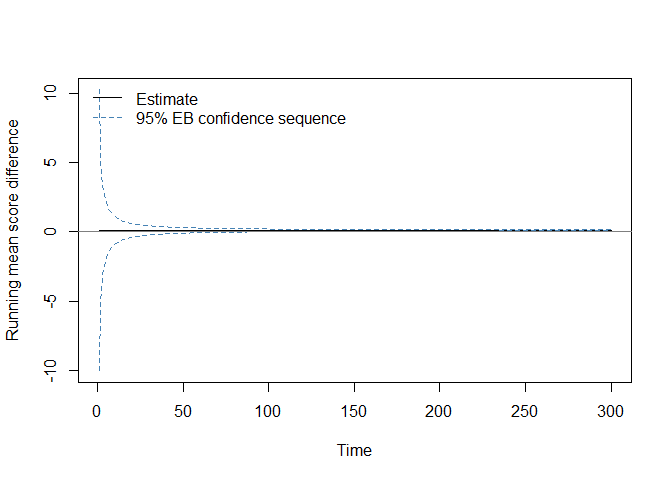

seqcomp is an R package for anytime-valid sequential comparison of probabilistic forecasters, implementing the framework of Choe and Ramdas (2024). Given two competing forecasters and a sequence of binary or categorical outcomes, the package constructs confidence sequences and e-processes for the running mean score difference that are valid simultaneously at every point in time, without requiring a pre-specified sample size or adjustment for repeated monitoring.
The package provides:
- Positively oriented proper scoring rules (Brier, logarithmic, spherical, CRPS, tick loss, QLIKE, Winkler).
- Anytime-valid confidence sequences: Hoeffding-style (Theorem 1, Choe and Ramdas 2024) and empirical Bernstein (Theorem 2).
- An asymptotic confidence sequence for unbounded scoring rules (Appendix C, Choe and Ramdas 2024).
- Sub-exponential e-processes for sequential hypothesis testing (Theorem 3).
- Winkler-score tools for one-sided sequential inference with unbounded binary scoring rules.
- Lag-handling utilities for multi-step-ahead forecast evaluation via stream splitting.
- Predictable-bounds tools for settings where score differences are not globally bounded in advance.
All boundary computations (normal mixture, gamma-exponential mixture, polynomial stitching) are implemented from scratch, with no dependency on the confseq package.
Installation
Available on CRAN:
install.packages("seqcomp")The development version can be installed from GitHub:
# install.packages("pak")
pak::pak("alasgarliakbar/seqcomp")Basic example
compare_forecasts() is the main entry point. It computes pointwise scores, the running mean score difference, a confidence sequence, and two one-sided e-processes in a single call.
library(seqcomp)
set.seed(1)
n <- 300
y <- rbinom(n, size = 1, prob = 0.55)
# Forecaster p has some signal; forecaster q always predicts 0.5
p <- ifelse(y == 1, 0.62, 0.38)
q <- rep(0.50, n)
out <- compare_forecasts(
p = p,
q = q,
y = y,
scoring_rule = "brier"
)
tail(out[, c("t", "estimate", "lower", "upper", "e_pq", "e_qp")])
#> t estimate lower upper e_pq e_qp
#> 295 295 0.1056 0.07129320 0.1399068 2681618 2.220446e-16
#> 296 296 0.1056 0.07140910 0.1397909 2824574 2.220446e-16
#> 297 297 0.1056 0.07152422 0.1396758 2975161 2.220446e-16
#> 298 298 0.1056 0.07163857 0.1395614 3133784 2.220446e-16
#> 299 299 0.1056 0.07175215 0.1394478 3300873 2.220446e-16
#> 300 300 0.1056 0.07186498 0.1393350 3476882 2.220446e-16The column estimate is the running mean score difference . Positive values favour p; negative values favour q. The columns lower and upper are the empirical Bernstein confidence sequence bounds. The columns e_pq and e_qp are the two one-sided e-process values; the two-sided rejection threshold at level alpha = 0.05 is 2 / 0.05 = 40.
plot(
out$t, out$estimate,
type = "l",
ylim = range(c(out$lower, out$upper, 0), finite = TRUE),
xlab = "Time",
ylab = "Running mean score difference"
)
lines(out$t, out$lower, lty = 2, col = "steelblue")
lines(out$t, out$upper, lty = 2, col = "steelblue")
abline(h = 0, col = "gray50")
legend(
"topleft",
legend = c("Estimate", "95% EB confidence sequence"),
lty = c(1, 2),
col = c("black", "steelblue"),
bty = "n"
)
Scale parameter conventions
Two scale conventions are used throughout, following Choe and Ramdas (2024) exactly. Theorem 1 (Hoeffding CS) requires , so c = 1 is used for Brier or spherical score differences in . Theorems 2 and 3 (empirical Bernstein CS and e-process) require , so c = 2 is used for the same score differences. compare_forecasts() applies these conventions automatically. They differ from the Python comparecast package, which applies the Theorem 2/3 convention throughout.
Lower-level interface
compare_forecasts() is a convenience wrapper. The underlying functions can be called directly for finer control:
scores_p <- brier_score(p, y)
scores_q <- brier_score(q, y)
cs <- cs_bernstein(scores_p, scores_q, alpha = 0.05, c = 2)
ep <- eprocess(scores_p, scores_q, alpha = 0.05, c = 2)Background
The statistical methods in seqcomp are based on:
- Confidence sequences and time-uniform probability bounds (Howard, Ramdas, McAuliffe and Sekhon, 2021).
- E-values and game-theoretic statistics (Ramdas, Grünwald, Vovk and Shafer, 2023).
- Sequential forecaster comparison under the weak null hypothesis (Choe and Ramdas, 2024).
The package was developed as part of a bachelor’s thesis at the Vienna University of Economics and Business (WU Vienna).
Citation
If this package is used in published work, please cite the package itself and the following papers:
citation("seqcomp")References
Choe, Y. J. and Ramdas, A. (2024). Comparing Sequential Forecasters. Operations Research, 72(4), 1368–1387. https://doi.org/10.1287/opre.2021.0792
Howard, S. R., Ramdas, A., McAuliffe, J. and Sekhon, J. (2021). Time-uniform, nonparametric, nonasymptotic confidence sequences. The Annals of Statistics, 49(2). https://doi.org/10.1214/20-AOS1991
Howard, S. R., Ramdas, A., McAuliffe, J. and Sekhon, J. (2020). Time-uniform Chernoff bounds via nonnegative supermartingales. Probability Surveys, 17, 257–317. https://doi.org/10.1214/18-PS321
Ramdas, A., Grünwald, P., Vovk, V. and Shafer, G. (2023). Game-theoretic statistics and safe anytime-valid inference. Statistical Science, 38(4), 576–601. https://doi.org/10.1214/23-STS894
Waudby-Smith, I., Arbour, D., Sinha, R., Kennedy, E. H. and Ramdas, A. (2024). Time-uniform central limit theory and asymptotic confidence sequences. The Annals of Statistics, 52(6). https://doi.org/10.1214/24-AOS2408